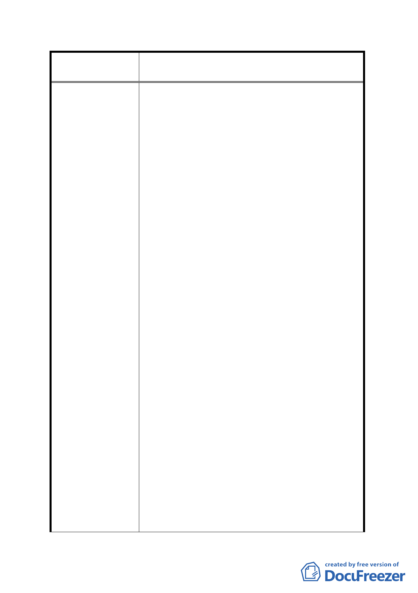

案名
變更臺北市內湖區蘆洲里附近部分工業區為
保護區、住宅區及道路用地主要計畫案
極低動用公權力辦理徵收道路用地，如吾等
353、358 地號原含之道路用地部分已被徵收，開
闢了 12 米安康路，也繳交了道路完工受益費。
因垃圾山、焚化廠的存在，致發展落後三、四十
年，如今又要以都市計畫變更手段來推動重劃，
令吾等沿建築線的可建土地面積再次縮水 45%，
是何等的不公平。
2. 當內湖垃圾山在垃圾堆積滿載、基隆河被汙染而
除役之際，也因垃圾分類推廣而致使內湖焚化廠
停爐。本區居民正期盼有一波新的發展光景之
時，市府不另類回饋這些陰臺北市垃圾而受害無
窮的蘆洲里住民（如以南港區中南段二小段 865
地號等由臺北市地政處所辦理市地重劃案，即為
一可借鏡的成功案例），而推出以變更都市計畫
加採辦理市地重劃，新增保護區、道路等公共設
施及所有工程費用均由所有參與重劃之土地所
有權人共同負擔，無異是一隻牛被剝兩次皮之
感。
3. 重劃 A、B 區新設一條無改善交通功能的一小截
區內 15 米計畫道路，若為解決道路建築線問題，
8 米計畫道路兩旁各退縮 3.5 米牆面線規定就足
以解決問題。試問本地區是何交通必經要道，又
要有多大腹地，需要這麼多條大道來負擔交通問
題，想想以前每日有多少千輛次的北市垃圾車流
量，在原道路系統下都不曾發生車流負載不足問
題。請市府主事者深思，多為這群小土地所有權
人想想，土地不應做無謂之浪費（比如規劃這麼
多條同方向又密集之道路），致使參與重劃後所
分得土地太低而降低參與重劃之意願，使政府之
美意變成民怨。
4. 本區土地所有權人，大都是小地主，因垃圾山及
焚化廠的存在，與垃圾為伍了三、四十年。本就
沒有能力遷移他處之弱勢原蘆洲里住戶，參與重
劃後又要負擔所有重劃相關費用，以致於未來重
劃完成後所分得之土地可建容積，比現在所住房
- 23 -